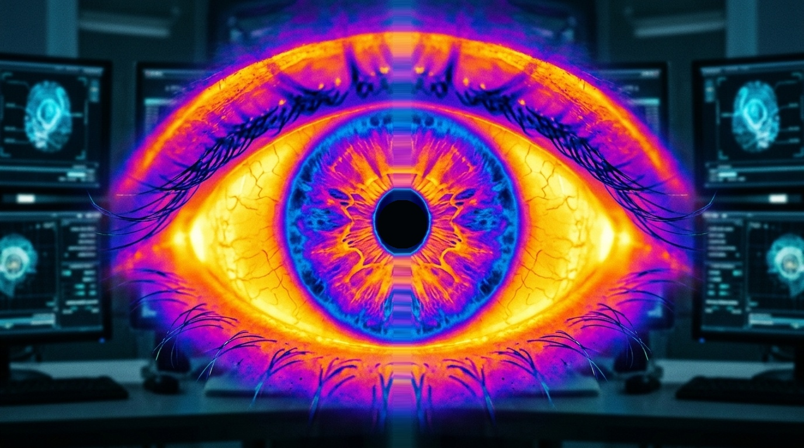

1. OCULAR DISCOMFORT
1 / 7
Dry Eye Detector
Understand eye in minute
✨
LIVE SCAN • NATURAL → THERMAL
⚡ 7 Questions • Standardized 0–100 OSDI Scoring • Laterality Analysis
For screening purposes only. Not a medical diagnosis
Dry Eye Detector • Assessment Mode
Q1
1. OCULAR DISCOMFORT
How often have you experienced gritty, painful, or sore eyes?
Step 8 of 8 • Thermal Ocular Scan
Upload Thermal Eye Image
Upload a thermal image for finding dry eye or normal eye
Drag & drop or browse thermal photo
FLIR / Ironbow Thermograms Only • Normal photos rejected
🔥 Thermal Scan Verified
🔒
End-to-end local diagnostic processing. Your health data remains private.
Analyzing Ocular Health...
Quantifying 7-day symptom responses, laterality, and ocular surface indices...
Standard OSDI Index
Normal (0-12)
0
/ 100 Index
0 (Normal)
13 (Mild)
23 (Moderate)
33+ (Severe)
ℹ️
Recommendation: